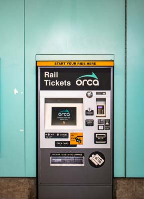
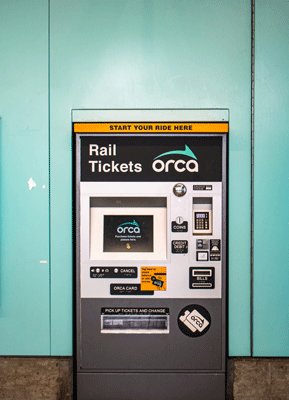
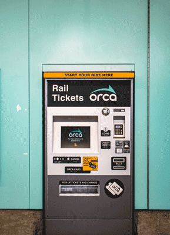
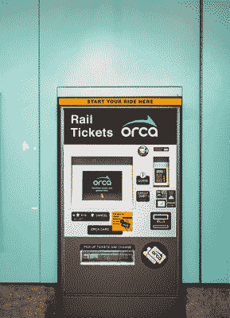

- 80% quality JPEG
- 40kb
- Good Quality

- 40% quality JPEG
- 16kb
- Decent Quality

- 256 color gif
- 60kb
- Good Quality

- 64 color gif
- 39kb
- Decent Quality

- 8 color gif
- 39kb
- Poor Quality
- 24 PNG
- 139kb
- Good Quality



